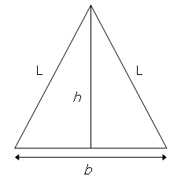

Consider the isosceles triangle with base length, $b = 16$, and legs, $L = 17$.

By using the Pythagorean theorem it can be seen that the height of the triangle, $h = \sqrt{17^2 - 8^2} = 15$, which is one less than the base length.
With $b = 272$ and $L = 305$, we get $h = 273$, which is one more than the base length, and this is the second smallest isosceles triangle with the property that $h = b \pm 1$.
Find $\sum L$ for the twelve smallest isosceles triangles for which $h = b \pm 1$ and $b$, $L$ are positive integers.
solve(n=2) → ?solve(n=12) → ?solve(n=20) → ?